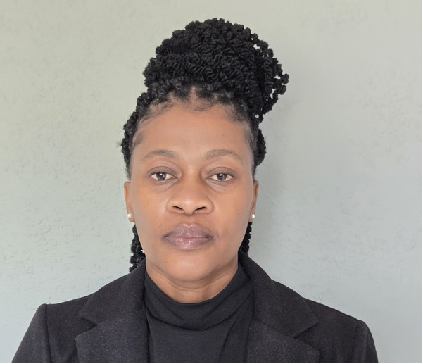

Family law
mediation
Find practical arrangements that help your family move forward.
- Divorce settlement agreements
- Child and spousal maintenance
- Parenting plans
- Section 22 parental rights and responsibilities agreements
When conflict feels overwhelming, a conversation can change the direction. We help families, couples and businesses work towards agreement without drawn-out court disputes.

Conflict can affect your relationships, your livelihood and your ability to move forward. Mediating Life provides a dispute resolution service that helps turn disagreement into an opportunity for change and restoration.
Our team of qualified and skilled mediators uses communication tools and negotiation techniques to help you work towards a mutually beneficial and legally binding agreement.
Meet the person behind the practice ↗Thoughtful, structured support for the conversations that matter.
Find practical arrangements that help your family move forward.
A private, guided space for couples to address disagreements, improve communication and explore a way forward together.
Explore marital mediation ↗Resolve civil and business disagreements through constructive dialogue, with attention to the relationships and interests involved.
Explore civil & commercial ↗Explore resolution through dialogue, with a mediator guiding the conversation.
A confidential setting for difficult discussions and sensitive concerns.
A structured approach that can reduce the time and expense of prolonged disputes.
You help shape the outcome, rather than leaving every decision to a third party.
Nomvuyo is the founder of Mediating Life, a published author and a former Lower Court Judge. Her experience of protracted trials and reserved judgments informs her commitment to helping people find a constructive way through conflict.
She works with a team of accredited mediators to help families, couples and businesses explore agreements that address their needs.
Get to know our approach ↗Contact our office with a brief description of your matter.
We assess suitability, discuss fees privately and confirm arrangements. Appointments require office approval.
A mediator guides a structured conversation, helping everyone be heard and explore solutions.
Where agreement is reached, the terms are recorded. Legal formalities depend on the matter.
Nomvuyo Kutshwa is an accredited mediator in good standing on the ADR Network SA Panel.
She received her mediation training from the Mediation Academy. Her practice also draws on commercial mediation training received through ADR Network SA.
Start with a conversation. Tell us a little about your situation and we’ll help you explore the next step.